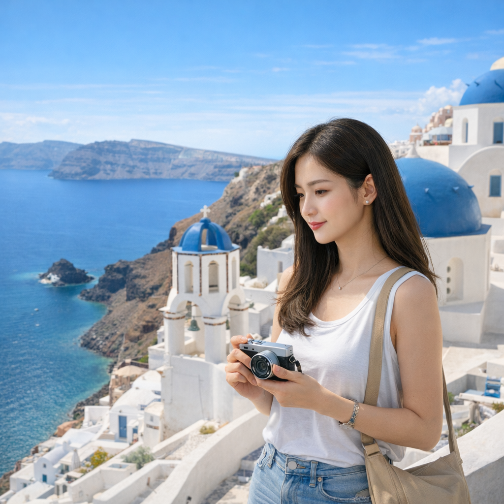

Hello, Santorini!
Published:

Meet Dorami — a curious traveler who balances city life with spontaneous escapes to the world’s most beautiful corners.
Today’s diary entry comes from Santorini, Greece: whitewashed lanes, bright blue domes, and a sparkling caldera view that feels painted by the sun.
Camera in hand and a light breeze at her back, Dorami wanders through Oia’s cliffside paths, collecting moments — the clink of café cups, the shimmer of the Aegean, and the quiet joy of being somewhere new.
This trip kicks off her diary: small stories from big places, one photo at a time.